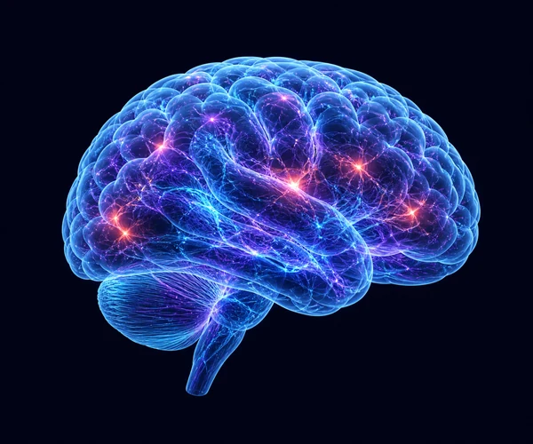
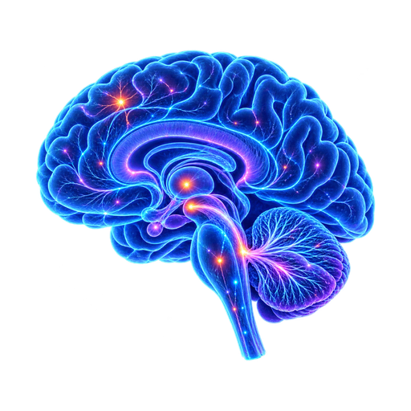

Vision
→Retina → LGN → V1 → V2/V4
A NEUROSCIENCE FRAMEWORK
A neuroscience framework linking synesthesia, neuroplasticity, and human function—bridging sensory pathways, brain networks, and real-world outcomes.
EXPLORE THE FRAMEWORKRetina → LGN → V1 → V2/V4
Cochlea → MGN → A1 →
Auditory Association
Olfactory Epithelium → Bulb →
Piriform Cortex/Amygdala → OFC
Taste Buds → NTS → VPMpc →
Insula
Dorsal Column and
Spinothalamic Pathways →
Thalamus → S1/S2
Local hyperconnectivity
between sensory areas
Altered feedback from
heteromodal association
cortex
Modified gating and
salience filtering
Atypical structural
connectivity persists
Enhanced encoding
and recall
Enhanced cross-modal concurrents
Increased emotional
resonance
Greater depth, salience and meaning
Heightened risk of distraction and fatigue
More consistently
reported
Last stable, not consistently replicated
Potential protective
factor in
later life
cross-modal concurrents become
consciously and repeatedly
experienced
Enhanced encoding and recall
Richer semantic linkage
Greater flexibility and insight
Better real-world function
 V4
V4Occipito-parietal cross-activation

Higher neurogenesis and synaptic plasticity
Aβ / tau
burden,
Higher dysfunction
as an early AD
disease biomarker
Improve mood and communication,
especially in mild SCD
Preservation of emotional recall
(e.g., ACC and SMA)

Meta-analysis shows
benefits across mood
and cognition
Single-sensory stimulation
(e.g., music only)
Multisensory stimulation
(vision + scent + sound)